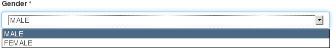
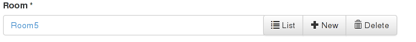
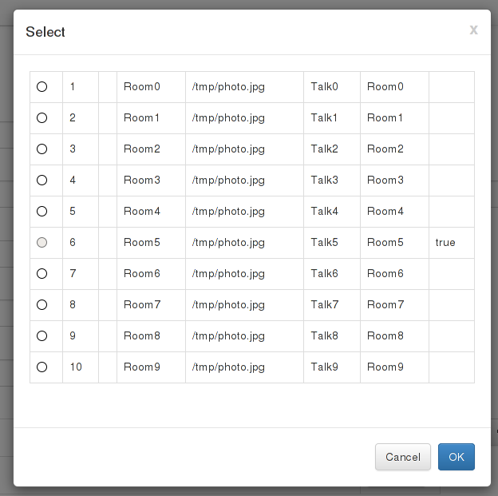

(Quick Reference)
Grails Admin - Reference Documentation
Authors: Kaleidos Open Source
Version: 0.1
1 Introduction
The Grails Admin plugin provides and easy and secure backend to administer out-of-the-box your Grails applications.
Absolute functional from scratch, gives much more power with his extensible widget system.
1.1 Release history and changelog
- 9th May 2014
- 0.1.1: First internal release
- 23rd May 2014
- 0.6.1: First ready for world testing release
1.2 Contributors
1.3 Dependencies
This plugin doesn't import any plugin but needs that your application have installed the following dependencies:
- Spring Security Core v1.X or v2.X for authorization/authentication:
Spring Security Core 2.x
1.4 Installation
To install you should include in your BuildConfig.groovy
plugins {
runtime ":admin:0.1"
}It's recommended that you include a Spring Security Core plugin to secure the administration.
plugins {
// Spring Security v1.X , example:
compile ":spring-security-core:1.2.7.3"
}plugins {
// … or v2.X , example:
compile ":spring-security-core:2.0-RC3"
}and edit your app
Config.groovy and include the list of domains to start working with:
Example:
grails.plugin.admin.domains = [ "net.kaleidos.TestDomain", "net.kaleidos.AnotherDomain" ]
2 Plugin Structure
The Grails plugin integrates seamlessly with your application

3 Plugin Configuration
The power of the grails admin plugin is that you can create a full-fleshed grails administration page
only by configuration.
In order to be flexible enough the plugin provides several configuration for tunning your application.
You have to include the following properties in your
Config.groovy file.
Your
Config.groovy would look like this:
// mandatory
grails.plugin.admin.accessRoot = "/myconfadmin"// optional
grails.plugin.admin.domains = [
"net.kaleidos.conferences.Room",
"net.kaleidos.conferences.Attendee",
"net.kaleidos.conferences.Conference",
"net.kaleidos.conferences.Talk",
"net.kaleidos.conferences.Speaker"
]// optional
grails.plugin.admin.domain.Conference = "net.kaleidos.conferences.ConferenceAdmin"3.1 Global Configuration
Domains List
Necessary You have to explicitely set the domains that your application is going to manage.
The property is a list of strings containing the full class name of your domains
By default it contains an empty list.
grails.plugin.admin.domains = [
"net.kaleidos.TestDomain",
"net.kaleidos.AnotherDomain"
]Admin URL Access Root
Optional A good security practice is not to use a "standard" URI to access your administration backend.
Grails-Admin allows you to customize the endpoint so it uses a custom one.
By default the value is /admin
grails.plugin.admin.accessRoot = "/admin"
Allow Default Configuration
When a domain has a relationship with another domain (i.e. 1-1 relationship) if the related object
has not been defined in the managed domains list you will not be able to interact with it by default.
You can explicitely activate default configuration on objects that are not defined in your domain list
by using this property.
Optional
grails.plugin.admin.allowDefaultConfig = false
Security. Access role
Optional The default role required for a user to access the admin is "ROLE_ADMIN" but you can customize
to use any role defined with your application.
grails.plugin.admin.security.role = "ROLE_ADMIN"
Security. Forbid unsecured admin on Production environment
By default the plugin checks if your application is secured or not (currently using Spring Security 1.x
and Spring Security 2.x).
If your application is not secured, by default, the plugin will throw an exception when it's boostraped
on production environments.
You can override this behaviour by setting this property to "false"
Optional
grails.plugin.admin.security.forbidUnsecureProduction = true
3.2 Per Domain Configuration
You can configure the administration screens with a specific DSL that can be configure either in your
Config.groovy or in classes of type "Admin" that also allows the redefinition of some methods.
Configuration on Config.groovy file
grails.plugin.admin.domain.Test = {
create includes: ["name", "description", "dateCreated", "endDate"],
widget "address", "net.kaleidos.test.MyTestWidget", width: 500, height: 100
}Configuration on "Admin" entities
package testclass TestAdmin {
static options = {
create includes: ["name", "description", "dateCreated", "endDate"],
widget "address", "net.kaleidos.test.MyTestWidget", width: 500, height: 100
}}Then you should associate your admin class with the domain entity that manage.
grails.plugin.admin.domain.Test = "test.TestAdmin"
Include properties
You can select which properties the administration will display on a specific operation.
The order will be preserved in the form.
grails.plugin.admin.domain.Test = {
list includes: ["name", "description", "dateCreated", "endDate"]
create includes: ["name", "description"]
edit includes: ["name", "description"]
}Exclude Properties
You can customize which properties will be excluded from the administration screens.
grails.plugin.admin.domain.Test = {
list excludes: ["startDate", "endDate"]
create excludes: ["startDate", "endDate"]
edit excludes: ["startDate", "endDate"]
}Custom widgets
For some properties the default editor/renderer may not be enough. You can customize this behaviour writing your own widget.
Further documentation on the widgets sections.
grails.plugin.admin.domain.Test = {
widget "address", "net.kaleidos.test.MyTestWidget", width: 500, height: 100
}4 Tutorial
Steps
- Install plugin
- Config plugin in
Config.groovy
- Extend plugin with a new widget
A widget is a component of Grails Admin that represents a property from a domain object instance. The widget handles the rendering (HTML or JSON) for that property, and also transform the values received for that property into the correct type (for example, translate from String to Date as needed).
The plugin provides a set of built in widgets that should cover the majority of situations. To render other types or to display other type of data in a different way, you can create your own custom widgets.
Grails Admin Plugin comes with a set of built-in plugins but you can specify your own custom widget for a specific domain class and property in your app
Config.groovygrails.plugin.admin.domain.Test = {
widget "address", "net.kaleidos.test.MyTestWidget", width: 500, height: 100
}
stylingWidgets
Grails Admin Plugin brings to you several built in widgets, that you can use. The complete list of Built in widgets is this:
If you not specify otherwise on configuration, Grails Admin will select a built-in widget by the type of the attribute(sometimes modified by constraints):
LabelWidget is used when we don't know how to handle a type or his value, like
Currency,
File or
Collection types, in order to don't scramble your data
How would the plugin select automatically this widget?On domain class attributes of type Boolean
How can I configure this widget?There are several ways, described on the
configuration section.
One of the easies ways is on the file Config.groovy
grails.plugin.admin.domain.Test = {
widget "ok", "net.kaleidos.plugins.admin.widget.CheckboxInputWidget"
}<input type="checkbox" name="ok" class="form-control" checked="checked" />
- dateFormat: You can specify the date format for this widget. Although internally can use the format pattern of SimpleDateFormat, in order to use the html component you can only use d, dd, M, MM, yy, yyyy. By default, the format is "dd/MM/yyyy".
How would the plugin select automatically this widget?On domain class attributes of type Date
How can I configure this widget?There are several ways, described on the
configuration section.
One of the easies ways is on the file Config.groovy
grails.plugin.admin.domain.Test = {
widget "birthday", "net.kaleidos.plugins.admin.widget.DateInputWidget", dateFormat: "dd/mm/yyyy"
}<input type="text" value="29/05/1994" data-date-format="dd/mm/yyyy" name="birthday" class="date form-control" />
| Sample image |
|---|
 |
How would the plugin select automatically this widget?On domain class attributes of types Float or Double
Float height
Double weight
There are several ways, described on the
configuration section.
One of the easies ways is on the file Config.groovy
grails.plugin.admin.domain.Test = {
widget "height", "net.kaleidos.plugins.admin.widget.DecimalInputWidget"
}<input value="180.5" data-parsley-type="number" name="height" class="form-control" />
On domain class attributes of type String with a constraint of email
String email
static constraints = {
email email:true
}There are several ways, described on the
configuration section.
One of the easies ways is on the file Config.groovy
grails.plugin.admin.domain.Test = {
widget "email", "net.kaleidos.plugins.admin.widget.EmailInputWidget"
}<input type="email" value="paul@example.com" name="email" class="form-control" />
On domain class attributes of type Enum
enum Gender {
MALE, FEMALE
}You should not configure this widget
Sample of html render<select name="gender" class="form-control">
<option selected="selected" value="MALE">MALE</option>
<option value="FEMALE">FEMALE</option>
</select>
| Sample image |
|---|
 |
|  |
How would the plugin select automatically this widget?This widget won't be automatically selected, you will have to configure it.
How can I configure this widget?There are several ways, described on the
configuration section.
One of the easies ways is on the file Config.groovy
grails.plugin.admin.domain.Test = {
widget "hidden", "net.kaleidos.plugins.admin.widget.HiddenInputWidget"
}<input type="hidden" value="abc" name="hidden" class="form-control" />
| Sample image |
|---|
 |
How would the plugin select automatically this widget?On domain class attributes of classes not knwown for the Grails Admin Plugin
How can I configure this widget?There are several ways, described on the
configuration section.
One of the easies ways is on the file Config.groovy
grails.plugin.admin.domain.Test = {
widget "ok", "net.kaleidos.plugins.admin.widget.LabelWidget"
}<label class="form-control" name="photo">/tmp/image.jpg</label>
| Sample image |
|---|
 |
How would the plugin select automatically this widget?On domain class attributes of type Locale
How can I configure this widget?You should not configure this widget
Sample of html render<input type="text" value="es_ES" name="locale" class="form-control" />
| Sample image |
|---|
 |
This widget shows an iframe with a google maps view of the value, and an input text to show and update that value
How would the plugin select automatically this widget?This widget won't be automatically selected, you will have to configure it.
How can I configure this widget?There are several ways, described on the
configuration section.
One of the easies ways is on the file Config.groovy
grails.plugin.admin.domain.Test = {
widget "address", "net.kaleidos.plugins.admin.widget.MapWidget"
}<div view="mapwidget" class="map-widget">
<div>
<span class="map-container">
<iframe width="425" height="350" frameborder="0"
src="https://maps.google.com/maps?f=q&q=Madrid, Spain&output=embed"
marginwidth="0" marginheight="0" scrolling="no">
</iframe>
</span>
<input type="button" value="Refresh" class="map-widget-refresh js-map-widget-refresh">
</div>
<div>
<input type="text" value="Madrid, Spain" name="address" class="form-control map-widget-text js-map-widget-text">
</div>
</div>| Sample image |
|---|
 |
How would the plugin select automatically this widget?On domain class attributes of types Byte, Short, Integer or Long
How can I configure this widget?There are several ways, described on the
configuration section.
One of the easies ways is on the file Config.groovy
grails.plugin.admin.domain.Test = {
widget "height", "net.kaleidos.plugins.admin.widget.NumberInputWidget"
}<input type="number" value="20" name="age" class="form-control" />
| Sample image |
|---|
 |
How would the plugin select automatically this widget?On domain class attributes of type String with a constraint of password
String password
static constraints = {
password password:true
}There are several ways, described on the
configuration section.
One of the easies ways is on the file Config.groovy
grails.plugin.admin.domain.Test = {
widget "password", "net.kaleidos.plugins.admin.widget.PasswordInputWidget"
}<input type="password" value="12345" name="password" class="form-control" />
| Sample image |
|---|
 |
This widget is used for model a relation between the current domain object, and another domain object. This relation can be a one-to-one relation, or the week side of an one-to-many relation.
How would the plugin select automatically this widget?On domain class attributes which type is other domain class, including the 'belongsTo' constraints
static belongsTo = [room:Room]
You should not configure this widget
Sample of html render<div action="/conferences/myadmin/api/room" data-method="put" view="relationPopupOneWidgetField" class="relation-popupone-widget ">
<input type="hidden" value="6" name="room" class="js-one-rel-value">
<a name="room" class="js-one-rel-text" href="/conferences/myadmin/edit/room/6">Room5</a>
<div class="btn-group">
<a data-url="/conferences/myadmin/api/room" data-toggle="modal" class="btn btn-default js-relationpopuponewidget-list" href="#">
<span class="glyphicon glyphicon-list"> </span> List
</a>
<a data-target="#new-conferences_test_room" data-toggle="modal" class="btn btn-default js-relationpopuponewidget-new" href="#">
<span class="glyphicon glyphicon-plus"> </span> New
</a>
<a style="display:block;" class="btn btn-default js-relationpopuponewidget-delete" href="#">
<span class="glyphicon glyphicon-trash"> </span> Delete
</a>
</div>
</div><div data-field="room" class="modal fade" grailsadmin-remote="enabled" aria-hidden="true" aria-labelledby="confirmLabel" role="dialog" view="relationPopupOneWidgetNew" tabindex="-1" id="new-conferences_test_room" style="display: none;">
<div class="modal-dialog">
<div class="modal-content">
<div class="modal-header">
<buton class="close" aria-hidden="true" data-dismiss="modal" type="button">x</buton>
<h4 class="modal-title" id="confirmLabel">Add room</h4>
</div>
<div class="modal-body">
<form grailsadmin-remote="enabled" class="validate-form main-form" data-method="PUT" view="formView" method="post" action="/conferences/myadmin/api/room" novalidate="">
<div class="form-group">
<label for="board">Board *</label>
<input type="checkbox" name="board" disallowrelationships="true" class="form-control" data-parsley-multiple="board" />
</div>
<div class="form-group">
<label for="name">Name *</label>
<input type="text" value="" required="true" name="name" disallowrelationships="true" class="form-control" />
</div>
<div class="form-group">
<label for="photo">Photo</label>
<label name="photo" disallowrelationships="true" class="form-control"></label>
</div>
<div class="form-group">
<label for="talk">Talk</label>
<p>Disabled relationship due to be inside an embedded dialog</p>
</div>
</form>
</div>
<div class="modal-footer">
<button class="btn btn-default" data-dismiss="modal" type="button">Close</button>
<button class="btn btn-plus btn-success js-relationtablewidget-save-action" type="button">Save</button>
</div>
</div>
</div>
</div>| Sample image |
|---|
|  |
|  |
 |
This widget is used as an alternative form to model a relation between the current domain object, and another domain object. This relation can be a one-to-one relation, or the week side of an one-to-many relation.
This widget loads all the posible related domain objets to populate the select element, so it shouln't be used if there are too many of this elements
How would the plugin select automatically this widget?This widget won't be automatically selected, you will have to configure it.
How can I configure this widget?There are several ways, described on the
configuration section.
One of the easies ways is on the file Config.groovy
grails.plugin.admin.domain.Test = {
widget "speaker", "net.kaleidos.plugins.admin.widget.relation.RelationSelectWidget"
}<select name="speaker" class="form-control">
<option value="1">Speaker0</option>
<option selected="selected" value="2">Speaker1</option>
<option value="3">Speaker2</option>
<option value="4">Speaker3</option>
<option value="5">Speaker4</option>
</select>| Sample image |
|---|
 |
 |
This widget is used for model a relation between the current domain object and a collection of other domains objects. This relation can be a many-to-many relation, or the strong side of an one-to-many relation.
How would the plugin select automatically this widget?On domain class attributes which type is a collection of other domain class
static hasMany=[talks:Talk]
You should not configure this widget
Sample of html render<div view="relationtablewidget" class="relationtablewidget clearfix">
<input type="hidden" value="6" name="talks">
<input type="hidden" value="9" name="talks">
<table class="table table-bordered elements-table" data-optional="true" data-property-name="talks" data-detailurl="/conferences/myadmin/edit/talk/0">
<tbody><tr>
<td>
<a href="/conferences/myadmin/edit/talk/6">Talk5</a>
</td>
<td class="list-actions">
<a href="#" data-value="6" class="btn btn-default btn-sm js-relationtablewidget-delete">
<span class="glyphicon glyphicon-trash"> </span> Delete
</a>
</td>
</tr>
<tr>
<td>
<a href="/conferences/myadmin/edit/talk/9">Talk8</a>
</td>
<td class="list-actions">
<a href="#" data-value="9" class="btn btn-default btn-sm js-relationtablewidget-delete">
<span class="glyphicon glyphicon-trash"> </span> Delete
</a>
</td>
</tr>
</tbody></table>
<div>
<a href="#" data-url="/conferences/myadmin/api/talk" class="btn btn-default js-relationtablewidget-add">
<span class="glyphicon glyphicon-plus"></span> Add
</a>
</div>
</div>
This widget is used as an alternative form to model a relation between the current domain object and a collection of other domains objects. This relation can be a many-to-many relation, or the strong side of an one-to-many relation.
This widget loads all the posible related domain objets to populate the select element, so it shouln't be used if there are too many of this elements
How would the plugin select automatically this widget?This widget won't be automatically selected, you will have to configure it.
How can I configure this widget?There are several ways, described on the
configuration section.
One of the easies ways is on the file Config.groovy
grails.plugin.admin.domain.Test = {
widget "conferences", "net.kaleidos.plugins.admin.widget.relation.RelationSelectMultipleWidget"
}<select name="conferences" class="form-control" multiple="">
<option value="1">conferences.Conference : 1</option>
<option selected="selected" value="2">conferences.Conference : 2</option>
<option value="3">conferences.Conference : 3</option>
<option selected="selected" value="4">conferences.Conference : 4</option>
</select>| Sample image |
|---|
 |
How would the plugin select automatically this widget?On domain class with a constraint of inList
String country
static constraints = {
country inList: ["Canada", "Spain", "USA"]
}There are several ways, described on the
configuration section.
One of the easies ways is on the file Config.groovy
You can define the list of valid options with a map also on configuration
grails.plugin.admin.domain.Test = {
widget "country", "net.kaleidos.plugins.admin.widget.SelectWidget", options: ["Canada":"Canada", "Spain":"Spain", "USA":"USA"]
}<select name="country" class="form-control">
<option value="">--</option>
<option value="Canada">Canada</option>
<option selected="selected" value="Spain">Spain</option>
<option value="USA">USA</option>
</select>5.3.17 TextAreaWidget
How would the plugin select automatically this widget?This widget won't be automatically selected, you will have to configure it.
How can I configure this widget?There are several ways, described on the
configuration section.
One of the easies ways is on the file Config.groovy
grails.plugin.admin.domain.Test = {
widget "comment", "net.kaleidos.plugins.admin.widget.TextAreaWidget"
}<textarea name="comment" class="form-control>A comment</textarea>
| Sample image |
|---|
 |
5.3.18 TextInputWidget
How would the plugin select automatically this widget?On domain class attributes of type String
How can I configure this widget?There are several ways, described on the
configuration section.
One of the easies ways is on the file Config.groovy
grails.plugin.admin.domain.Test = {
widget "name", "net.kaleidos.plugins.admin.widget.TextInputWidget"
}<input type="text" value="Paul" name="name" class="form-control" />
| Sample image |
|---|
 |
How would the plugin select automatically this widget?On domain class attributes of type String with a constraint of url
String web
static constraints = {
web url:true
}There are several ways, described on the
configuration section.
One of the easies ways is on the file Config.groovy
grails.plugin.admin.domain.Test = {
widget "email", "net.kaleidos.plugins.admin.widget.UrlInputWidget"
}<input type="url" value="http://www.grails.org" name="web" class="form-control" />
| Sample image |
|---|
 |
Besides the built in widgets, you can create your own custom widgets.
Edit your app
Config.groovy and add this line for a domain class and property, where you define the custom widget class and some properties to configure.
Example:
grails.plugin.admin.domain.Test = {
widget "address", "net.kaleidos.test.MyTestWidget", width: 500, height: 100
}In this example we configure for domain class
Test and property
address a custom widget call
MyTestWidget.
Some properties could be specified and will we copied directly to HTML component.
Groovy side
Inherit from Widget
Your custom widget should inherit from the class net.kaleidos.plugins.admin.widget.Widget. That is an abstract class, that has only one methods that you must implement:
- String render(): The method to render your widget as html
Also, Widget define sever methods that you can overwrite if yo need them
- String renderBeforeForm(): Render code html before the form that contains all the widgets
- String renderAfterForm(): Render code html after the form that contains all the widgets
- Object getValueForJson(): Returns an object (usually an string) that whould be used in order to represent the current value of the widget when the widget is represented as JSON.
- List<String> getAssets(): Returns the list of assets (css and js) needed for the html representation of this widget. GrailsAdminPlugin uses the convention-over-configuration paradigm, so if you don't implement this method, it will try to load one js file and one css file with the same name that the widget.
Last, there are several properties that you can use. Note that you don't write this properties, it is GrailsAdminPlugin who assign the values. You should use this properties as read-only.
- Object value: The current value of the widget. Its type will depend on the actual widget. For example, on a TextInputWidget will be a String, and on a DateInputWidget will be a Date.
- Map htmlAttrs: A map of properties to be rendered on the html representation, like the name, if it is required, etc.
- Map internalAttrs: A map of properties internal for the widget. Remember that the widget represents a property of a domain object, so:
- domainObject: This is that domain object. Note that it could be null (for example, on the create screen)
- propertyName: This is the name of that property.
- domainClass: This is the class of that object.
- relatedDomainClass: If the property is a relation with another domain class, this is that domain class. It could be null.
Sample
With all this, lets make a sample Widget. We will create a custom widget that show an addres on a map. It will be used for properties of type String.
Create the Widget ClassWe will create our widget on the file src/groovy/sample/MapWidget.groovy
package sampleimport net.kaleidos.plugins.admin.widget.Widgetclass MapWidget extends Widget { @Override
String render() {
return ""
}
}We will have the address on the value attribute of the widget.
We want that out widget create an iframe showing the address on the map.
String render() {
def html = new StringBuilder()
html.append("<div>")
html.append("<iframe width='425' height='350' frameborder='0' scrolling='no' marginheight='0' marginwidth='0'")
html.append("src='https://maps.google.com/maps?f=q&q=${value}&output=embed'")
html.append("></iframe>")
html.append("</div>") return html
}The render method is cool, and show the address on a map, but we want also to allow to update the address. In order to do so, we need to add an input field below the map. Also, it is important to render the htmlAttrs, in order to get all the properties needed.
So we must add several lines to the render metod
String render() {
def html = new StringBuilder()
html.append("<div>")
html.append("<iframe width='425' height='350' frameborder='0' scrolling='no' marginheight='0' marginwidth='0'")
html.append("src='https://maps.google.com/maps?f=q&q=${value}&output=embed'")
html.append("></iframe>")
html.append("</div>") html.append("<input class='form-control' type='text' ")
htmlAttrs.each{key, value ->
html.append("$key='${value}' ")
}
html.append("value='${value}' />")
return html
}
When you write html as this example, there is a risk of an XSS attack (for example, if the value is something like "<script>alert(0)</script>). So, instead of write the value directly, you should write it as value.encodeAsHTML(). Also, you should be carefull with the null values. So you can write rhe values as
${value?:value.encodeAsHTML():''}
Frontend side
Most widgets won't need special css nor js. But if you need them, you can use them.
GrailsAdminPlugin uses the convention-over-configuration paradigm, so by default it will try to load one js file and one css file with the same name that the widget. The plugin will search for this files on WEB-APP/js/admin/ and WEB-APP/css/admin/.
If you need something diferent, you can specify a custom method getAssets on the widget.
Sample
We will upgrade our MapWidget with a button that refresh the map with the current address. In order to do so, we will use a js and a css file. For the sake of the sample, we wont use the convention, so we need to override the getAssets method of the plugin
List<String> getAssets() {
[ 'js/admin/map.js',
'css/admin/map.css'
]
}
Also, we will modify the render method with the code to show the button, and also with some divs to contain the elements, and several css classes.
String render() {
def html = new StringBuilder()
html.append("<div class='map-widget'>")
html.append("<div>")
html.append("<span class='map-container'>")
html.append("<iframe width='425' height='350' frameborder='0' scrolling='no' marginheight='0' marginwidth='0'")
html.append("src='https://maps.google.com/maps?f=q&q=${value}&output=embed'")
html.append("></iframe>")
html.append("</span>")
html.append("<input type='button' class='map-widget-refresh js-map-widget-refresh' value='Refresh' />")
html.append("</div>") html.append("<div>") html.append("<input type='text' class='form-control js-map-widget-text' ")
htmlAttrs.each{key, value ->
html.append("$key='${value}' ")
}
html.append("value='${value}' />")
html.append("</div>")
html.append("</div>")
return html
}In order to give the button some style, we created the file WEB-APP/css/admin/map.css
.map-widget-refresh {
background-color: #4040EA;
border: 0 none;
color: #FFFFFF;
margin-bottom: 10px;
margin-left: 15px;
padding: 5px;
}And finally, to refresh the map, we have created the following javascript code on the file WEB-APP/js/admin/map.js
$(".map-widget").on( "click", ".js-map-widget-refresh", function(event) {
var value = $(this).closest(".map-widget").find(".js-map-widget-text").val();
var html = "<iframe width='425' height='350' frameborder='0' scrolling='no' marginheight='0' marginwidth='0'";
html += "src='https://maps.google.com/maps?f=q&q=" + value + "&output=embed'></iframe>";
$(this).closest(".map-widget").find(".map-container").html(html);
});
NOTE: GrailsAdminPlugin uses jquery, so it is available for your custom widgets also
6 Roadmap
Next topics planned:
- Filters
- Group of Properties
- Widget multy property
- Batch delete
- Batch edit
- 1-n inline
- 1-1 inline
- Preview media content Widget
- Widget for properties in list view
- Help texts associated with input fields
- 1-n 2 list of combos
- 1-n checkbox
- Navigate throw relations window by windows
- Themes
- Content roles
- History of changes (Auditory)
- Overwrite CRUD methods
- CRUD events
- Inexistente fields
- 1-n-1 relations. Hide middle relationship class
- New Button in 1-n
7 FAQ
Why should I use this instead of "scaffolding"?
The scaffolding is better as a code-generation tool that "bootstrap" a new application with a base
application. The aim of the plugin is to provide a customizable backend to extend the administration.
We don't want to override scaffolding but to use this configuration-based alternative.
Also, this plugin has some other added features such as:
- Integrated with security
- Configurables views
- Integrates easily as a plugin